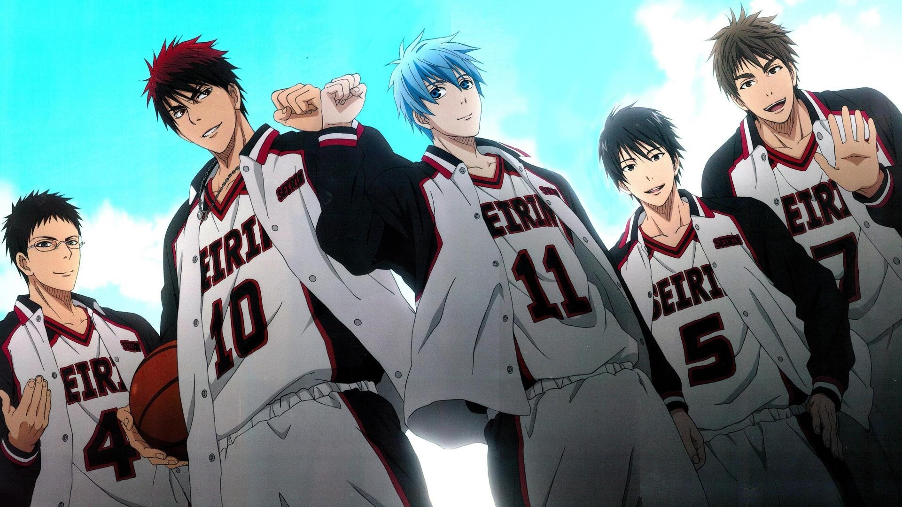
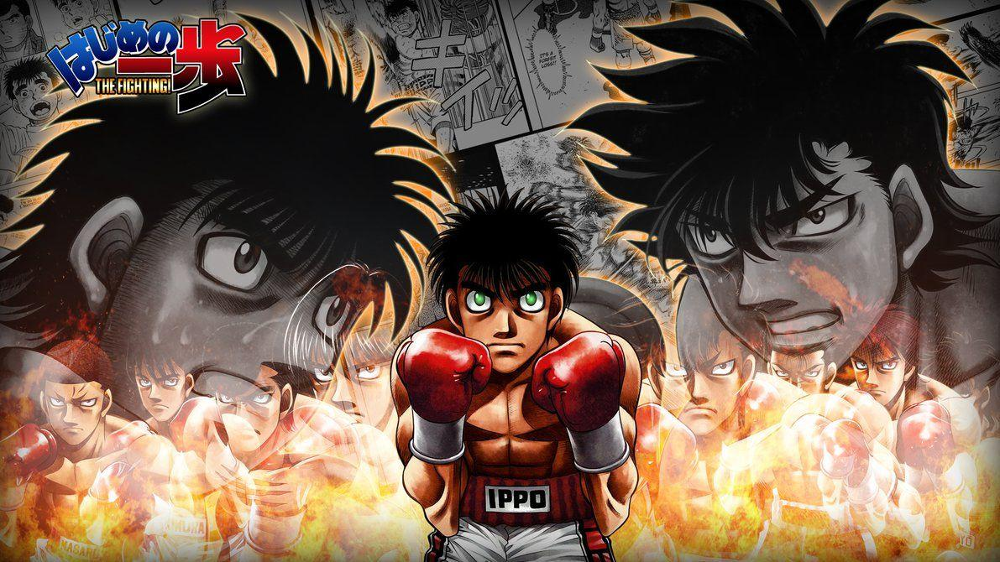
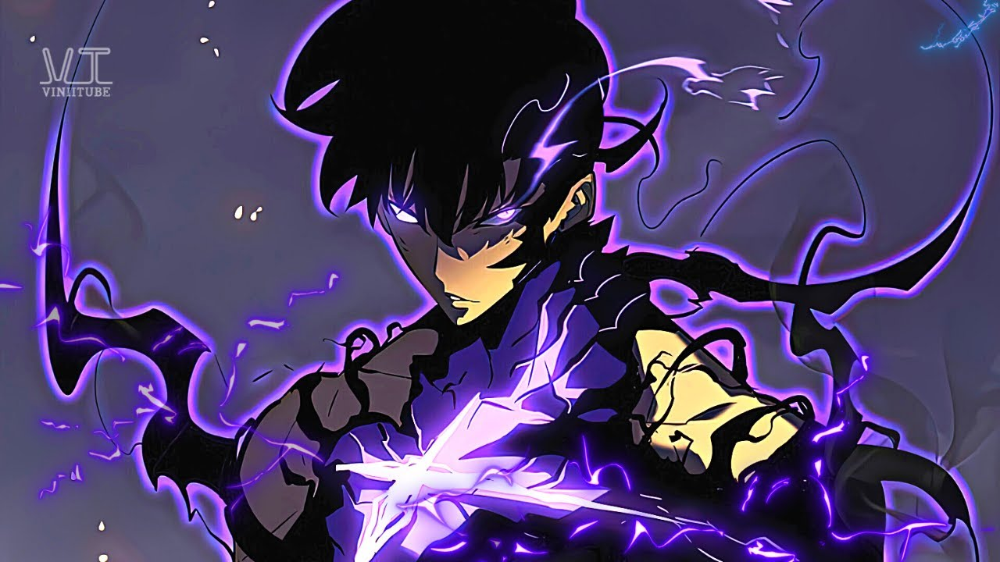
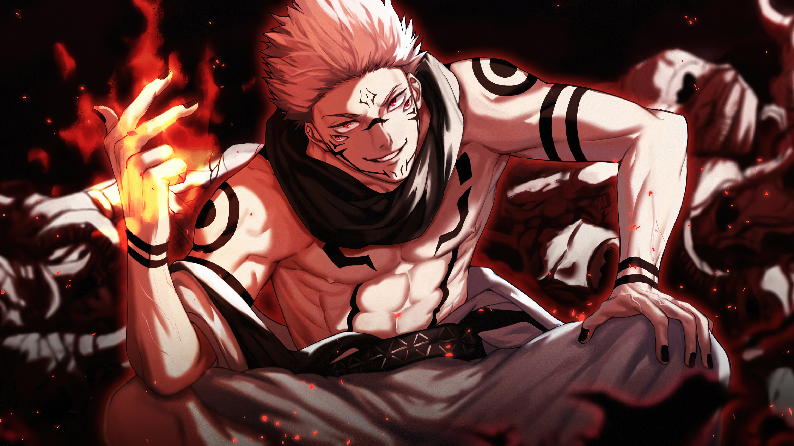
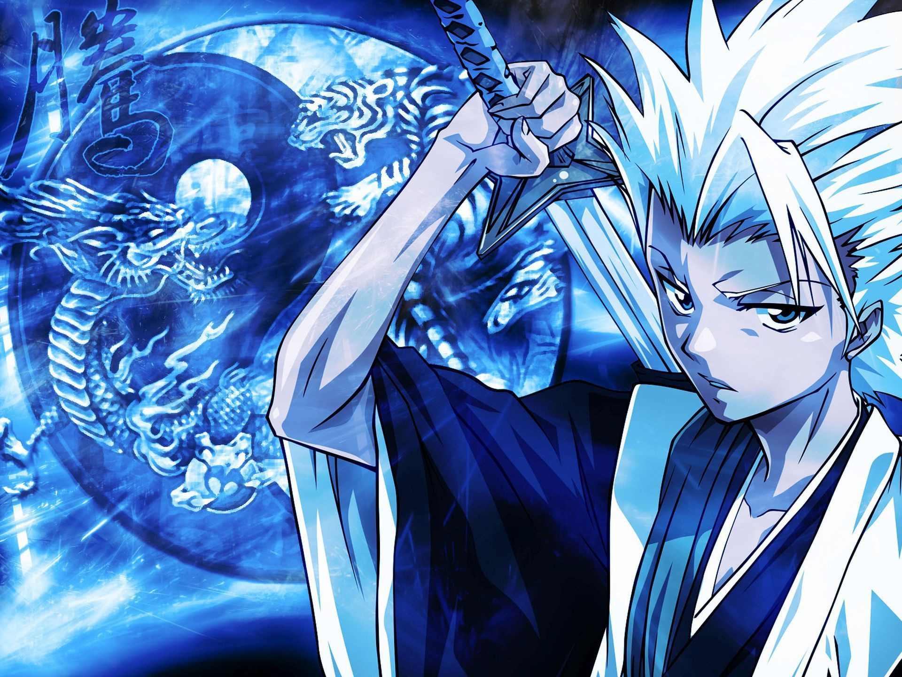
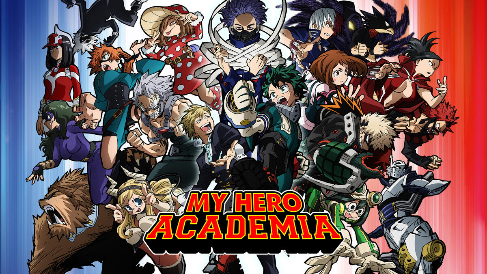

AnimeVerse


Welcome To Anime Universe
Welcome to our anime website, where you can immerse yourself in the vibrant and exciting world of Japanese animation. Whether you're a seasoned otaku or a newcomer to the genre, our website is the perfect place to explore the latest anime releases, catch up on classic series, and connect with a community of like-minded fans. From action-packed shonen adventures to heartwarming slice-of-life dramas, we have something for every taste and interest. So sit back, grab some snacks, and let us take you on a journey into the colorful and captivating universe of anime.
Types of Animes We Offer



- Shonen: Anime aimed at a young male audience, featuring action-packed storylines and often featuring male protagonists.
-
Shojo: Anime aimed at a young female audience, featuring romantic storylines and often featuring female protagonists.
-
Seinen: Anime aimed at an adult male audience, often featuring mature themes and more complex storytelling.
-
Josei: Anime aimed at an adult female audience, often featuring romantic and dramatic storylines.
-
Josei: Anime aimed at an adult female audience, often featuring romantic and dramatic storylines.
-
Mecha: Anime featuring giant robots or mechs, often used in battles or wars.
-
Sports: Anime featuring sports as a central theme, such as basketball, football, or volleyball.
-
Slice of Life: Anime that focuses on the everyday lives of characters, often without a central plot.
- Fantasy: Anime set in a fictional world with magic, mythical creatures, and other fantastical elements.
- Horror: Anime featuring horror or supernatural elements, often with graphic violence or gore.
- Comedy: Anime that focuses on making the audience laugh, often with exaggerated characters and situations.
- These are just a few examples of the many types of anime out there, each with their own unique style, themes, and audience.
These are just a few examples of the many types of anime out there, each with their own unique style, themes, and audience.
About AnimeVerse



At our anime website, we are dedicated to offering the best quality content to our viewers. We strive to create an immersive experience that captures the essence of Japanese animation and connects with our audience on a deep and personal level.
We believe that anime is an art form that deserves the highest level of respect and attention to detail. That's why we work tirelessly to curate a diverse selection of anime that showcases the best the industry has to offer. From classic series to the latest releases, we are constantly updating our library to ensure that we are providing our viewers with the most comprehensive and up-to-date selection of anime available.
We understand that the quality of the content we offer is of the utmost importance to our viewers. That's why we are committed to providing the highest quality streaming experience possible. Our website is optimized for smooth playback and high-quality video and audio, so that our viewers can fully immerse themselves in the world of anime without any distractions or interruptions.
Our team of dedicated anime enthusiasts are passionate about the genre and are always on the lookout for the latest trends and releases. We strive to bring our viewers the best quality content, along with insightful commentary and analysis, so that they can stay up-to-date on all the latest anime news and trends.
At our anime website, we believe that anime has the power to inspire, entertain, and bring people together. We are dedicated to offering the best quality content possible, so that our viewers can fully experience the wonder and magic of Japanese animation.
We Offer The Following Options



- Streaming
- Downloads
- Manga
- Interactive Forum Discussions